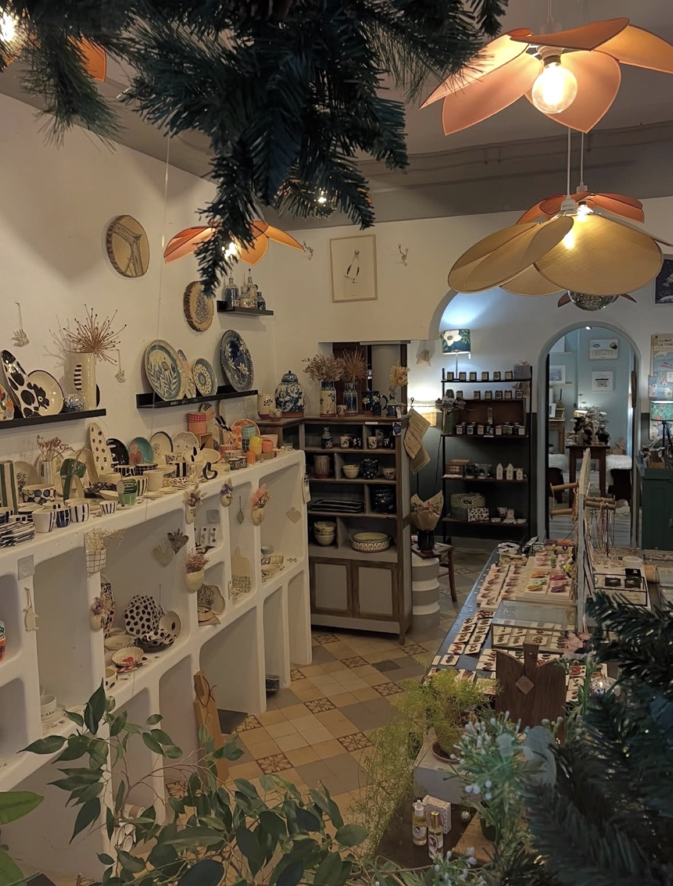

Activité principale
La boutique de créateurs
Une trentaine de créateurs français en dépôt-vente : céramique, vaisselle, textile, savons, bijoux, accessoires et décoration. Pièces uniques ou petites séries, fabriquées à la main dans des ateliers français.
Explorer la boutique